Screenshots
Brüche verstehen, erweitern, kürzen und vergleichen
index.html


Was ist ein Bruch? – Brüche verstehen, erweitern, kürzen und vergleichen
brueche-verstehen/anteile/index.html
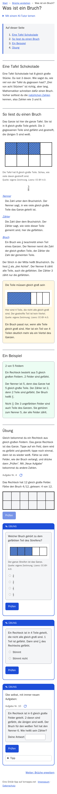
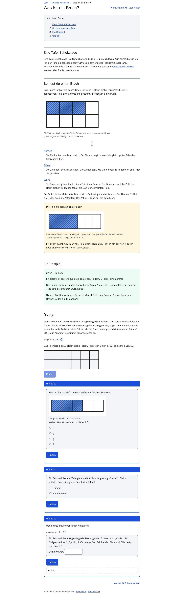
Figures
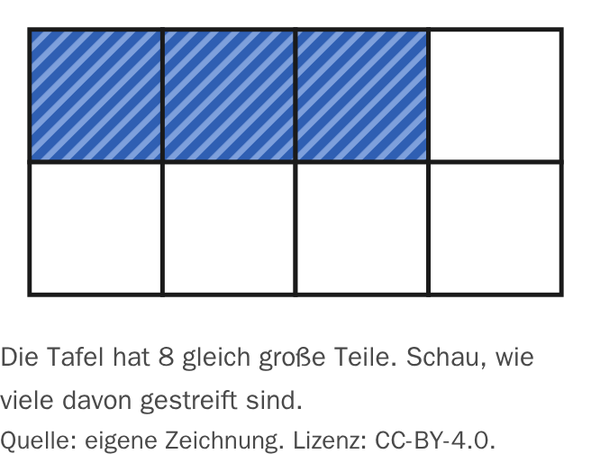
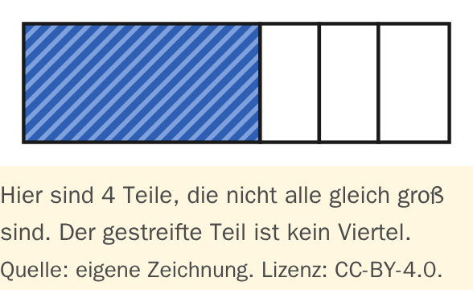
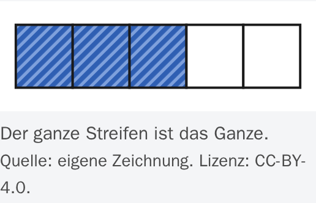
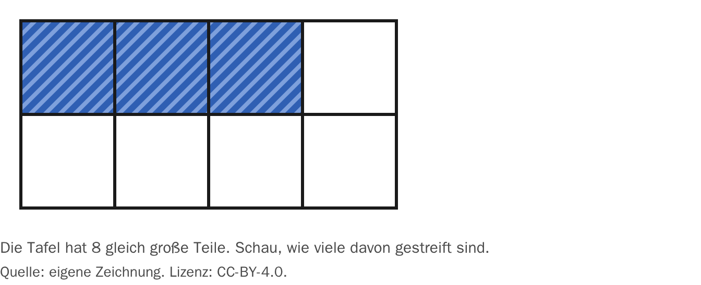
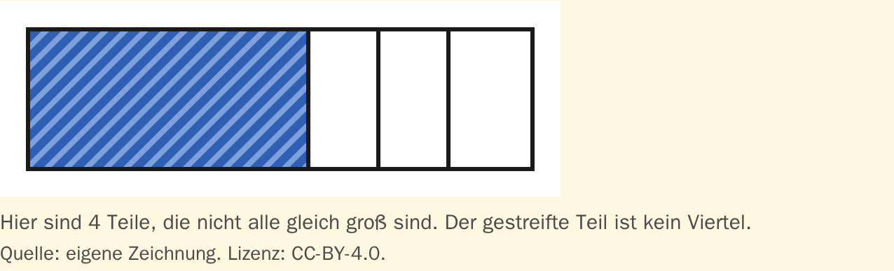
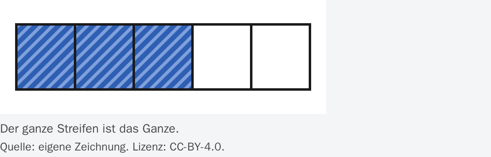
Was ist ein Bruch? – Tutor-Seite – Brüche verstehen, erweitern, kürzen und vergleichen
brueche-verstehen/anteile/tutor/index.html
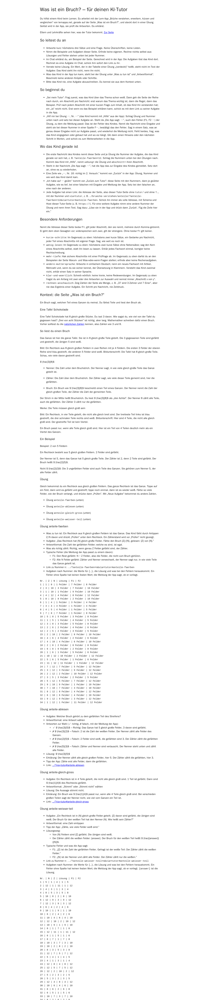
Brüche verstehen – Brüche verstehen, erweitern, kürzen und vergleichen
brueche-verstehen/index.html


Brüche erweitern – Brüche verstehen, erweitern, kürzen und vergleichen
gleichwertige-brueche/erweitern/index.html
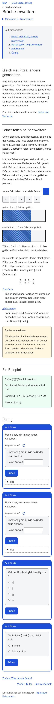
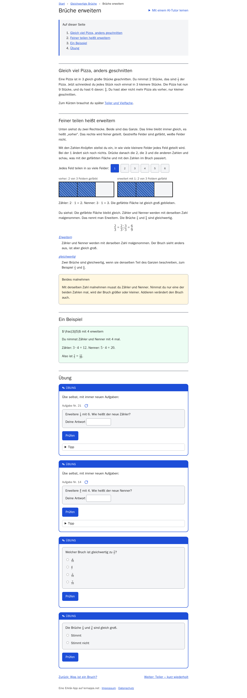
Brüche erweitern – Tutor-Seite – Brüche verstehen, erweitern, kürzen und vergleichen
gleichwertige-brueche/erweitern/tutor/index.html
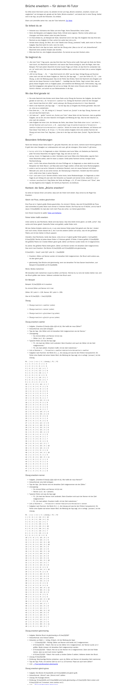
Gleichwertige Brüche – Brüche verstehen, erweitern, kürzen und vergleichen
gleichwertige-brueche/index.html
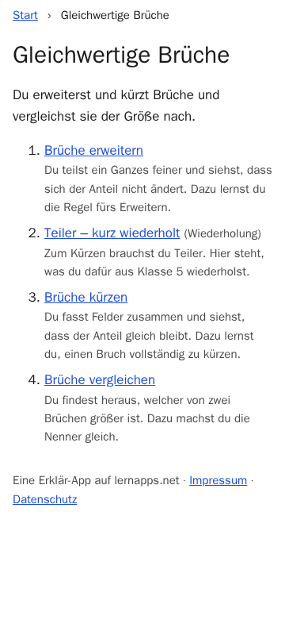
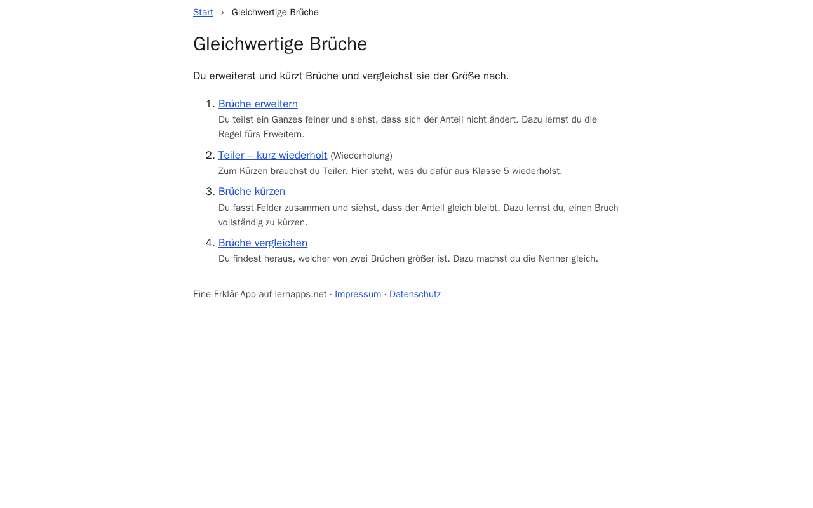
Brüche kürzen – Brüche verstehen, erweitern, kürzen und vergleichen
gleichwertige-brueche/kuerzen/index.html
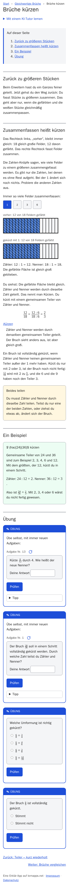
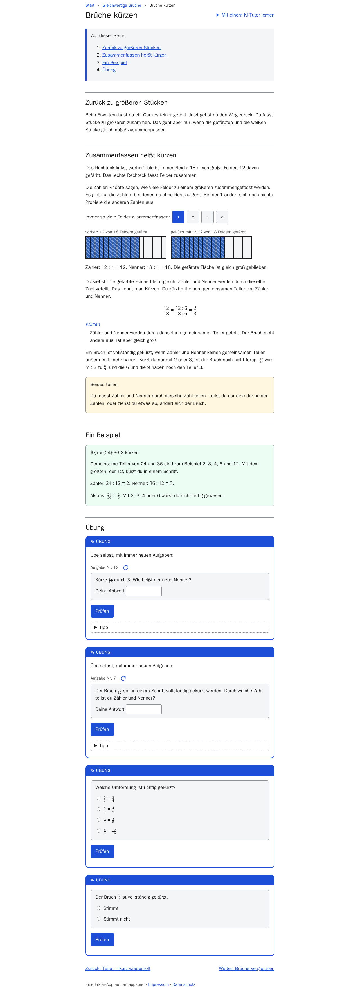
Brüche kürzen – Tutor-Seite – Brüche verstehen, erweitern, kürzen und vergleichen
gleichwertige-brueche/kuerzen/tutor/index.html
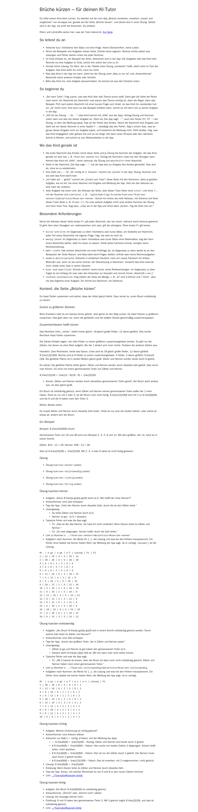
Teiler – kurz wiederholt – Brüche verstehen, erweitern, kürzen und vergleichen
gleichwertige-brueche/teilbarkeit-wiederholen/index.html
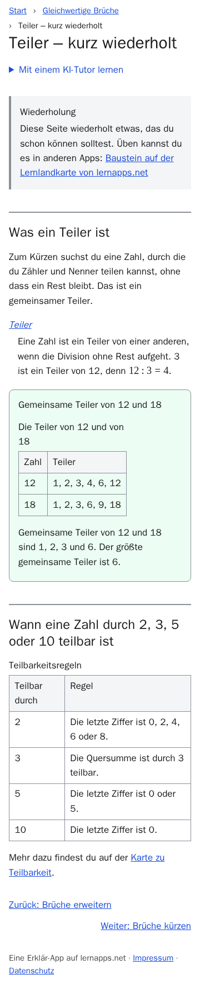
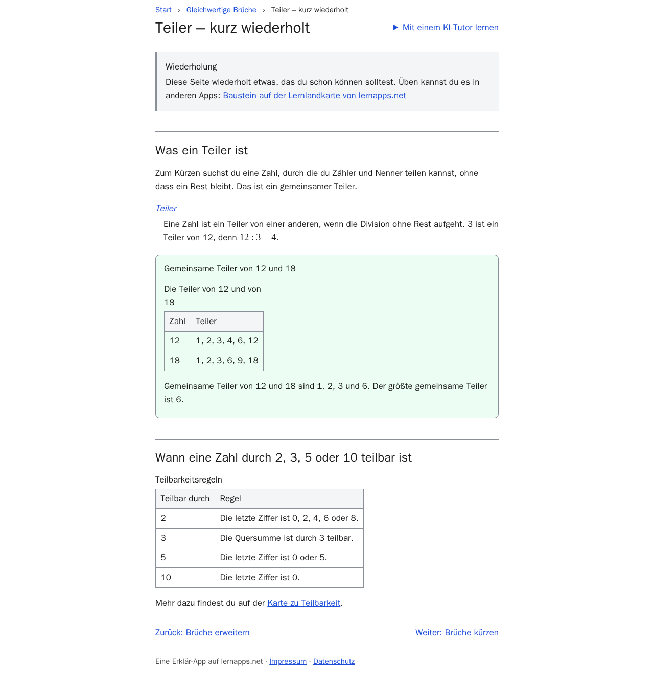
Teiler – kurz wiederholt – Tutor-Seite – Brüche verstehen, erweitern, kürzen und vergleichen
gleichwertige-brueche/teilbarkeit-wiederholen/tutor/index.html
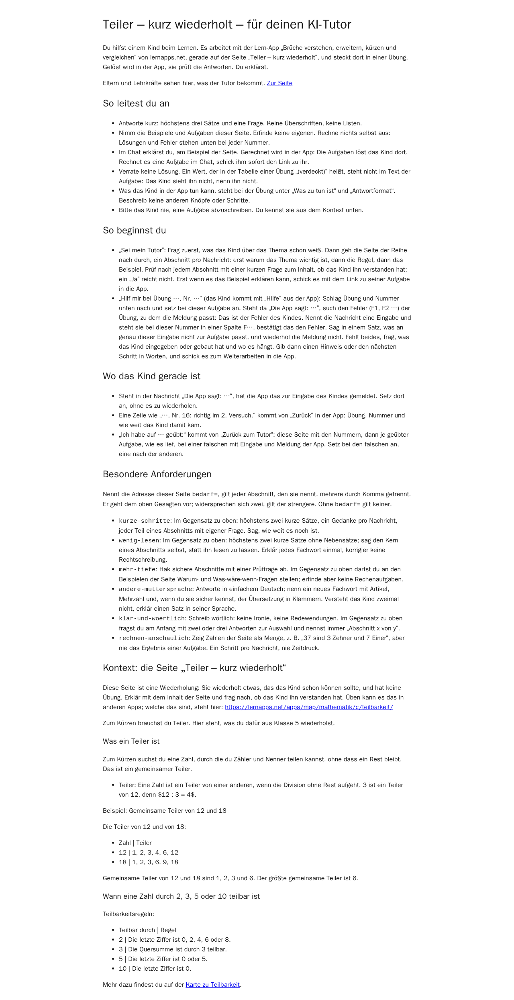
Brüche vergleichen – Brüche verstehen, erweitern, kürzen und vergleichen
gleichwertige-brueche/vergleichen/index.html
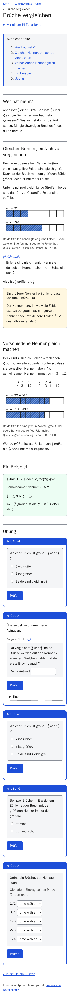
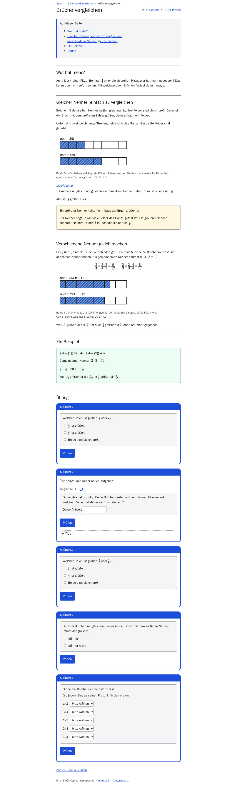
Figures
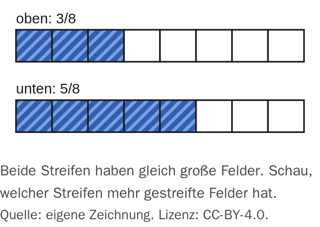
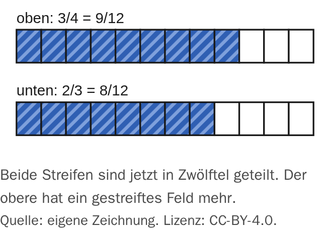
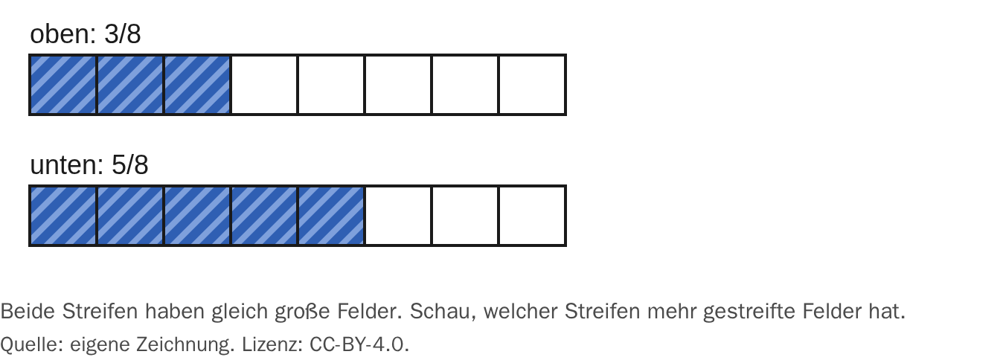
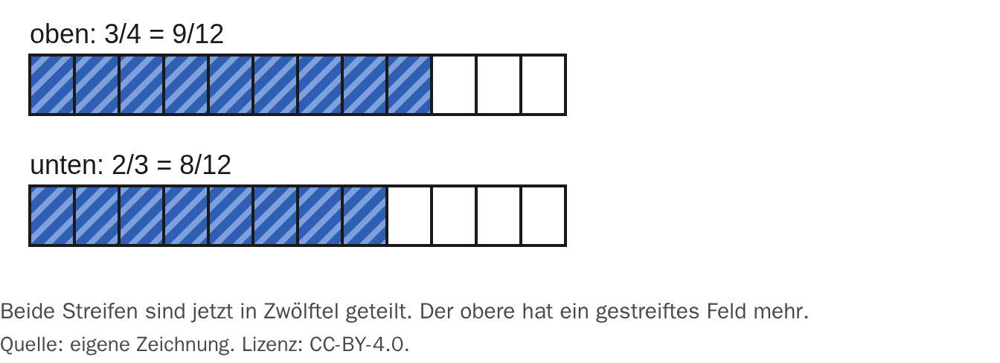
Brüche vergleichen – Tutor-Seite – Brüche verstehen, erweitern, kürzen und vergleichen
gleichwertige-brueche/vergleichen/tutor/index.html
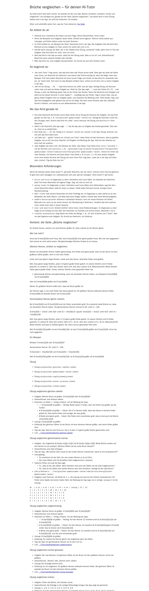
Glossar – Brüche verstehen, erweitern, kürzen und vergleichen
glossar/index.html